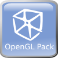

The goal of the NetBeans OpenGL Pack Project is to provide a easy to use OpenGL development environment integrated into NetBeans.
The NetBeans OpenGL Pack provides modules like an GLSL shader editor, hardware compiler/linker integration or tools for displaying hardware information. The pack supplies ready to run JOGL (JSR 231) demo projects and all OpenGL samples of the OpenGL Programming Guide (also known as redbook).
Screenshots can be found on the New and Noteworthy page.
